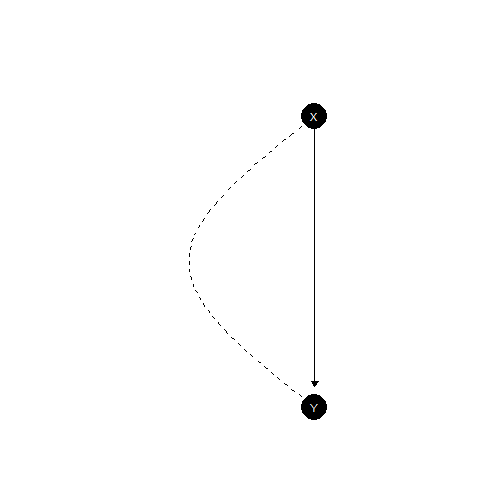

library(CausalQueries)
library(knitr)
options(CausalQueries.legacy = FALSE) # package default; set explicitly for clarity
CausalQueries:::enable_stan_parallel(quiet = TRUE)What this vignette is about
CausalQueries can work in two ways:
-
Factorized (
legacy = FALSE, the default): keep beliefs about nodal parameters (the lambdas on each node’s response schedule). Update and query without building a giant table of every possible combination of those schedules. -
Legacy (
legacy = TRUE): expand causal types (full combinations), keep a type matrixP, and (optionally) a type-level posterior.
Both aim at the same numerical answers on the models where both apply. This vignette explains the factorized path in plain language: how event probabilities are formed, how missing data is handled, what Stan updates, and how queries are evaluated. The running example is a small confounded model:
model <- make_model("X -> Y; X <-> Y")
plot(model)
Read X -> Y; X <-> Y as:
affects
,
and there is also unobserved confounding between
and
(the <-> link).
The objects that matter
Think in three layers:
-
Nodal types — local “how does this node respond?”
schedules. For
with no parents: just
0or1. For with parent : four schedules usually labelled00,10,01,11(response when , then when ). -
Parameters (lambdas) — probabilities over those
schedules (Dirichlet priors / posterior draws). Under confounding,
’s
parameters are stratified by
’s
type (
parameters_df$given). -
Events — what the data look like
(
X0Y0,X1Y1, …), including incomplete rows where some nodes are missing.
You do not need a stored list of every causal type for ordinary update and query on this path.
| param_names | node | nodal_type | given | priors |
|---|---|---|---|---|
| X.0 | X | 0 | 1 | |
| X.1 | X | 1 | 1 | |
| Y.00_X.0 | Y | 00 | X.0 | 1 |
| Y.10_X.0 | Y | 10 | X.0 | 1 |
| Y.01_X.0 | Y | 01 | X.0 | 1 |
| Y.11_X.0 | Y | 11 | X.0 | 1 |
| Y.00_X.1 | Y | 00 | X.1 | 1 |
| Y.10_X.1 | Y | 10 | X.1 | 1 |
| Y.01_X.1 | Y | 01 | X.1 | 1 |
| Y.11_X.1 | Y | 11 | X.1 | 1 |
With flat priors, each simplex is uniform over its rows.
Complete data: probability of one observed world
Unconfounded warmup (X -> Y)
Without confounding, a complete world has probability
(probability of ’s value) × (probability that ’s schedule produces given ).
Under flat priors that product is for each of the four complete patterns:
xy <- make_model("X -> Y")
get_event_probabilities(xy) |> kable(digits = 3)| event_probs | |
|---|---|
| X0Y0 | 0.25 |
| X1Y0 | 0.25 |
| X0Y1 | 0.25 |
| X1Y1 | 0.25 |
Hand check for X0Y0:
- Given
,
if
’s
schedule has first digit
0(types00and01), each with mass , so - Product:
Internally the factorized code does the same lookup node by node (no causal-type table):
# Illustrative internal helpers (not part of the public API)
params <- get_parameters(xy)
assignment <- list(X = 0L, Y = 0L)
pX <- CausalQueries:::nodal_assignment_prob(xy, params, "X", assignment)
pY <- CausalQueries:::nodal_assignment_prob(xy, params, "Y", assignment)
c(P_X = pX, P_Y_given_parents = pY, product = pX * pY)
#> P_X P_Y_given_parents product
#> 0.50 0.50 0.25Confounded running example
(X -> Y; X <-> Y)
Confounding means and ’s schedules are not independent: ’s lambdas come in strata keyed to ’s nodal type. The probability of a complete world is still “multiply the node contributions,” but the contribution must pick the stratum that matches ’s type along each path Stan uses. The public summary is still:
get_event_probabilities(model) |> kable(digits = 3)| event_probs | |
|---|---|
| X0Y0 | 0.25 |
| X1Y0 | 0.25 |
| X0Y1 | 0.25 |
| X1Y1 | 0.25 |
So the bookkeeping is richer, but the user idea is unchanged: parameters → probability of each fully observed pattern.
Incomplete data: add the possibilities you did not see
Suppose we only learn , and is missing. The probability of that coarsened event is the sum of complete worlds consistent with it:
That is all “variable elimination” means here for data: sum out the nodes you did not observe.
w <- get_event_probabilities(model)
grid <- get_all_data_types(model, complete_data = TRUE)
p_Y1_hand <- sum(w[grid$Y == 1])
p_Y1_hand
#> [1] 0.5The factorized helper does the same sum without asking you to build the table yourself (and on larger unconfounded graphs it can avoid listing every world):
CausalQueries:::prob_event_ve(model, evidence = list(Y = 1L))
#> [1] 0.5For a chain of many nodes where you only observe the ends, the same idea applies: fix what you saw, add up (eliminate) what you did not. Stan update still uses a complete-data grid under a size cap (see the last section); R-side queries and event probabilities can use this elimination step directly.
How update_model works (factorized)
Updating still means: put a prior on the lambdas, see data, get a
posterior over lambdas. The Stan file
simplexes_factorized.stan never needs a causal-type matrix
P. In outline:
- Parameters — one Dirichlet simplex per parameter set (a node, or a confound stratum).
-
Paths /
parmap— for each complete-data column, which lambdas are active at each node (confound may split paths;mapaggregates paths back to data patterns). -
w— probability of each complete pattern (product over nodes of the active lambda mass). -
E— maps possibly coarsened observed events to those complete patterns (w_full = E %*% w). - Likelihood — multinomial over events within each missingness strategy (same as legacy).
A compact view of the Stan arithmetic (simplified):
// for each path i: product over nodes of (sum of active lambdas)
w_0[i] = exp(sum_j log(node_prob[j, i]));
w = map' * w_0;
w_full = E * w;
// then multinomial(Y | w_full within each strategy)On our small model, prep exposes those dimensions:
set.seed(1)
data <- make_data(model, n = 40) |> collapse_data(model)
stan_data <- CausalQueries:::prep_stan_data_factorized(model, data)
c(
n_params = stan_data$n_params,
n_paths = stan_data$n_paths,
n_data = stan_data$n_data,
n_events = stan_data$n_events,
n_strategies = stan_data$n_strategies
)
#> n_params n_paths n_data n_events n_strategies
#> 10 4 4 4 1A short update (for illustration; vignettes precompute so CRAN need not re-run Stan):
model <- model |>
update_model(data, iter = 1000, chains = 2, seed = 1)
inspect(model, "posterior_distribution") |>
head() |>
kable(digits = 3)
#>
#> posterior_distribution
#> Summary statistics of model parameters posterior distributions:
#>
#> Distributions matrix dimensions are
#> 1000 rows (draws) by 10 cols (parameters)
#>
#> mean sd
#> X.0 0.48 0.08
#> X.1 0.52 0.08
#> Y.00_X.0 0.21 0.14
#> Y.10_X.0 0.28 0.18
#> Y.01_X.0 0.22 0.14
#> Y.11_X.0 0.28 0.18
#> Y.00_X.1 0.24 0.15
#> Y.10_X.1 0.24 0.15
#> Y.01_X.1 0.27 0.16
#> Y.11_X.1 0.26 0.16| X.0 | X.1 | Y.00_X.0 | Y.10_X.0 | Y.01_X.0 | Y.11_X.0 | Y.00_X.1 | Y.10_X.1 | Y.01_X.1 | Y.11_X.1 |
|---|---|---|---|---|---|---|---|---|---|
| 0.481 | 0.519 | 0.067 | 0.568 | 0.260 | 0.106 | 0.046 | 0.398 | 0.304 | 0.251 |
| 0.527 | 0.473 | 0.394 | 0.151 | 0.077 | 0.378 | 0.297 | 0.167 | 0.494 | 0.042 |
| 0.355 | 0.645 | 0.214 | 0.117 | 0.339 | 0.329 | 0.247 | 0.102 | 0.387 | 0.264 |
| 0.542 | 0.458 | 0.264 | 0.468 | 0.185 | 0.082 | 0.171 | 0.158 | 0.107 | 0.564 |
| 0.572 | 0.428 | 0.357 | 0.017 | 0.121 | 0.504 | 0.060 | 0.485 | 0.055 | 0.400 |
| 0.480 | 0.520 | 0.323 | 0.239 | 0.018 | 0.420 | 0.404 | 0.095 | 0.448 | 0.053 |
The fitted model is stamped legacy = FALSE. Later
query_* calls inherit that stamp. There is no
type_posterior on this path; draws of interest are the
parameters.
How query_model works (factorized)
A query such as the ATE, , asks about interventions, not only about observed events. The factorized evaluator:
- Finds which nodes’ types actually matter for the query (and for any
given). - Under confounding, keeps confound partners in the same
block (do not cut
<->). - Builds only that relevant set of type combinations.
- For each parameter draw, weights those types by the right lambdas
(respecting
givenstrata) and averages the query.
query_model(
make_model("X -> Y; X <-> Y"),
query = "Y[X=1] - Y[X=0]",
using = "parameters"
) |>
kable(digits = 3)| label | query | given | using | case_level | mean | sd | cred.low | cred.high |
|---|---|---|---|---|---|---|---|---|
| Y[X=1] - Y[X=0] | Y[X=1] - Y[X=0] | - | parameters | FALSE | 0 | NA | 0 | 0 |
query_model(
model,
query = "Y[X=1] - Y[X=0]",
given = "Y==1",
using = "posteriors"
) |>
kable(digits = 3)| label | query | given | using | case_level | mean | sd | cred.low | cred.high |
|---|---|---|---|---|---|---|---|---|
| Y[X=1] - Y[X=0] :|: Y==1 | Y[X=1] - Y[X=0] | Y==1 | posteriors | FALSE | 0.008 | 0.229 | -0.425 | 0.446 |
Observational given clauses like Y==1
restrict attention to units consistent with that data pattern. Whether
you think of that as “conditioning on an event” or “keeping types that
realize the event,” the answers are pinned against the legacy path in
the test suite.
Same answers as legacy (when both apply)
On this small model, event probabilities match the causal-type path:
m_leg <- make_model("X -> Y; X <-> Y", legacy = TRUE)
m_fac <- make_model("X -> Y; X <-> Y", legacy = FALSE)
p_leg <- get_event_probabilities(m_leg)
p_fac <- get_event_probabilities(m_fac)
max(abs(as.numeric(p_fac) - as.numeric(p_leg[rownames(p_fac), ])))
#> [1] 0Use legacy = TRUE when you explicitly need type-level
objects (type_posterior, full causal_types
attached by default, etc.). Use the default factorized path for ordinary
update and query.
Scale notes (honest limits)
-
Complete-data columns for Stan scale as
for
binary nodes. Prep refuses grids larger than
getOption("CausalQueries.factorized_grid_max", 4096)unless you raise that option or shrink the model (simplify_model(), restrictions). -
Incomplete data is supported: missing nodes are
handled by summing consistent completes (
Ein Stan; elimination helpers in R). Missingness does not remove the need for those complete columns inside Stan. -
Very large graphs with few observed nodes: R-side
prob_event_ve()can answer “how likely is this partial observation?” without materializing the full grid; MCMC update still needs the Stan encoding above.
Further reading
-
vignette("a-getting-started")— basic make / update / query workflow
-
vignette("e-posteriors")— inspecting Stan posteriors
-
?simplify_model— reducing nodal types on large parent sets
-
?update_model/?query_model—legacyargument and inheritance